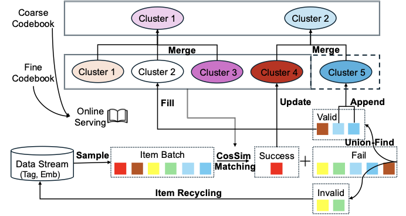
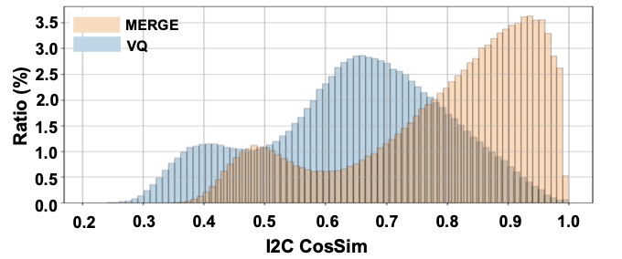
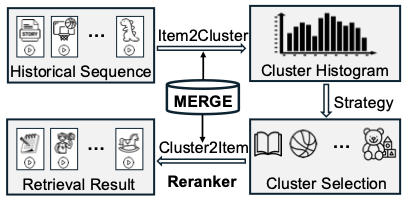

MERGE: Next-Generation Item Indexing Paradigm for Large-Scale Streaming Recommendation
Подробное саммари статьи:
Авторы: Jing Yan, Yimeng Bai, Zongyu Liu, Yahui Liu, Junwei Wang, Jingze Huang, Haoda Li, Sihao Ding, Shaohui Ruan, Yang Zhang.
Аффилиации: ByteDance; National University of Singapore.
1. Коротко
MERGE предлагает заменить forced-assignment VQ indexing на streaming-native кластеризацию. В VQ каждый item обязан попасть в ближайший centroid, даже если similarity низкая; это создает неточные, несбалансированные и плохо разделенные clusters. MERGE строит clusters from scratch: item принимается только выше threshold, unmatched items формируют новые clusters через union-find, occupancy мониторится в реальном времени, а затем fine clusters объединяются в coarse hierarchical index.
2. Контекст
Item indexing нужен и классическому retrieval, и generative recommendation. В industrial short-video/streaming catalogs distribution skewed и non-stationary: новые items приходят постоянно, популярность меняется, feedback loops усиливают ошибки. Статичный VQ codebook плохо переносит такую динамику, потому что не умеет отказаться от плохого assignment и не контролирует occupancy.
3. Проблема
- Accuracy: item может быть назначен cluster'у с низкой cosine similarity.
- Uniformity: одни clusters становятся огромными, другие почти пустыми.
- Separation: cluster centers близки друг к другу, item mappings нестабильны.
- Streaming update: fixed codebook не отражает появление новых семантических областей.
4. Метод и архитектура
MERGE - это не еще один вариант VQ-loss, а online indexing algorithm для потока items. На вход он получает поток item embeddings и prior tags, на выходе поддерживает hierarchical item index: fine-grained codebook \(\mathcal{Q}\), coarse-grained codebook \(\mathcal{P}\), mapping item -> cluster и обратный mapping cluster -> items для retrieval.
Идея в одном предложении: вместо того чтобы всегда насильно назначать item ближайшему centroid, MERGE сначала проверяет качество match, обновляет только хорошие clusters, а для плохо совпавших items создает новые clusters из самих данных.
4.1. Состояние, которое хранит алгоритм
- \(\mathcal{Q} = \{\mathbf{q}_k\}_{k=1}^{K}\) - fine codebook, где каждый \(\mathbf{q}_k\) является embedding'ом cluster'а. Размер \(K\) динамический: codebook может расширяться.
- \(\mathbf{S}_k\) - EMA-сумма embeddings items, назначенных cluster'у \(k\).
- \(N_k\) - EMA-count, то есть сглаженная occupancy cluster'а \(k\).
- \(\mathcal{Q}^{zero}\) - reset slots: cluster entries, которые занулены и могут быть переиспользованы новыми clusters.
- Очередь recycled items - items, которые пока не смогли ни хорошо matched, ни сформировать достаточно большой новый cluster.
- Coarse codebook \(\mathcal{P}\), который строится поверх \(\mathcal{Q}\) после стабилизации fine clusters.
4.2. Основной цикл MERGE
- Сформировать batch. Items группируются по prior tags из multimodal-информации, чтобы внутри batch были более однородные объекты. В статье используется около 100 tag categories. Это инженерный шаг, но он важен: без него в одном batch могут смешиваться разные semantic regions, и новые clusters будут шумными.
- Получить embeddings. Для каждого item берется 64-dimensional collaborative embedding из retriever model. Эти embeddings содержат ID-features, author-related features, statistical signals и content-aware attributes.
- Найти nearest existing cluster. Для item \(i\) считается cosine similarity до всех current codewords и выбирается лучший cluster:
\[ k_i^* = \arg\max_k \operatorname{sim}(\mathbf{e}_i, \mathbf{q}_k), \qquad s_i^* = \max_k \operatorname{sim}(\mathbf{e}_i, \mathbf{q}_k). \]
- Принять или отклонить assignment. Если \(s_i^* \ge \tau\), item считается matched и попадает в \(\mathcal{B}^+\). Если \(s_i^* < \tau\), item не втискивается в плохой cluster и попадает в \(\mathcal{B}^-\). Это главный поворот относительно VQ.
- Обновить matched clusters. Для каждого cluster \(k\) собираются matched items \(\mathcal{B}_k^+\). Затем обновляются EMA-переменные:
\[ \mathbf{S}_k \leftarrow \gamma \mathbf{S}_k + (1-\gamma)\sum_{i\in \mathcal{B}_k^+}\mathbf{e}_i,\qquad N_k \leftarrow \gamma N_k + (1-\gamma)|\mathcal{B}_k^+|. \]Новый centroid задается как \(\mathbf{q}_k \leftarrow \mathbf{S}_k / N_k\). EMA делает обновления не дергаными: cluster адаптируется к stream drift, но не разваливается от одного batch.
- Построить новые clusters из unmatched items. Для \(\mathcal{B}^-\) считаются pairwise similarities. Между двумя items проводится edge, если similarity выше \(\tau'\). Далее Union-Find находит connected components. Каждая component mean-pooled в candidate cluster \(\mathbf{u}\).
- Отфильтровать слабые candidate clusters. Candidate cluster становится valid только если его размер не меньше \(m\). Маленькие components считаются недостаточно надежными: их items уходят в recycling queue и ждут будущих batches.
- Добавить valid clusters в codebook через Fill-Then-Append. Сначала valid clusters заполняют reset slots \(\mathcal{Q}^{zero}\), чтобы сохранить относительный порядок codebook и не плодить лишний churn. Если reset slots не хватило, оставшиеся clusters append'ятся в конец \(\mathcal{Q}\). Для новых clusters инициализируются \(\mathbf{S}_k\) и \(N_k\).
- Параллельно контролировать occupancy. Каждый cluster классифицируется по \(N_k\): underfilled, growing или stable. Underfilled clusters reset'ятся сразу. Growing clusters получают окно наблюдения \(M\); если за \(M\) steps они не стали stable, их тоже reset'ят. Так MERGE чистит dead или слишком слабые clusters.
- Построить coarse hierarchy. После fine codebook \(\mathcal{Q}\) MERGE строит coarse codebook \(\mathcal{P}\). Пары prototypes merge'ятся по affinity score:
\[ w(\mathbf{p}_x,\mathbf{p}_y)=\operatorname{sim}(\mathbf{p}_x,\mathbf{p}_y)-\lambda \min(N_x,N_y). \]Первый член тянет похожие clusters вместе, второй штрафует merge крупных clusters, чтобы не разрушать uniformity. Merged prototype считается count-weighted average. Затем silhouette pruning выкидывает плохо сидящие fine prototypes, а pruned/unmerged prototypes переотправляются на reconnection. В статье строят один coarse layer, хотя процедуру можно рекурсивно повторять.
- Использовать index в retrieval serving. В Trinity-style pipeline по long-term user behavior строится histogram cluster distributions. Система выбирает relevant clusters, достает candidate items через cluster -> items mapping, затем передает кандидатов в downstream retriever/reranker, pre-ranking и ranking.

5. Objective и алгоритм
Objective не записан как один differentiable loss; это набор operational invariants, которые алгоритм поддерживает во время streaming update:
- Accuracy invariant: item назначается cluster'у только при достаточно высокой cosine similarity \(s_i^* \ge \tau\).
- Uniformity invariant: cluster occupancy не должна уходить в extreme skew; underfilled и stagnant growing clusters reset'ятся.
- Separation invariant: новые clusters создаются только из items, которые не похожи на existing codebook, а coarse merging использует pruning, чтобы не смешивать плохо совместимые fine prototypes.
- Stability invariant: centroids обновляются EMA, а reset slots переиспользуются через Fill-Then-Append, чтобы уменьшить churn индекса.
Практические hyperparameters из appendix: \(\tau=0.88\), \(\gamma=0.9993\), \(\tau'=0.83\), \(\lambda=0.01\), \(M=80\), \(m=4\), \(\varepsilon_1=0.25\), \(\varepsilon_2=0.2644\). Эти значения важны как ориентир, но не как универсальная настройка: они завязаны на embedding model, traffic mix и масштаб платформы.
5.1. Псевдокод на уровне реализации
initialize Q = empty codebook
initialize recycled_queue = empty
for each streaming update:
B = tag_based_batch(new_items + recycled_queue)
E = retriever_embeddings(B)
matched = []
unmatched = []
for item i with embedding e_i:
k_star, s_star = nearest_codeword(e_i, Q, cosine)
if s_star >= tau:
matched.append((i, k_star, e_i))
else:
unmatched.append((i, e_i))
for each cluster k:
B_k = embeddings assigned to k from matched
S_k = gamma * S_k + (1 - gamma) * sum(B_k)
N_k = gamma * N_k + (1 - gamma) * len(B_k)
if N_k > 0:
q_k = S_k / N_k
U = union_find_components(unmatched, edge_if_cosine_ge_tau_prime)
valid = [mean_pool(component) for component in U if size(component) >= m]
recycled_queue = items from components with size < m
Q = fill_then_append(Q, valid, reset_slots=Q_zero)
for each cluster k in Q:
if N_k < epsilon_1:
reset(k)
elif epsilon_1 <= N_k < epsilon_2 for more than M steps:
reset(k)
else:
keep(k)
periodically:
P = build_coarse_codebook(Q)
publish hierarchical index {P, Q} and mappings to serving6. Эксперименты и метрики
Offline evaluation измеряет три свойства: I2C cosine similarity для accuracy, cluster size distribution для uniformity и C2C cosine similarity для separation. MERGE превосходит VQ по всем трем. Online A/B test внутри Trinity-style serving pipeline показывает положительные relative changes по core metrics, включая Average Active Days и Average Active Hours, а single-path metrics подтверждают вклад index path. Case study демонстрирует более тематически согласованные retrieved videos.
7. Что важно в рисунках и таблицах

Рисунки Accuracy/Uniformity/Separation - центральные: они переводят спор о “лучшей кластеризации” в измеримые production properties. Serving figure показывает, как index вставляется в Trinity pipeline, а case study полезен как qualitative sanity check: retrieved items должны быть не только метриками похожи, но и визуально/тематически согласованы.

8. Сильные стороны
- Решает правильную production-проблему. Статья бьет не по абстрактному reconstruction loss, а по трем понятным failure modes индекса: плохой item-to-cluster match, skewed occupancy и слабое разделение clusters.
- Отказ от forced assignment. Самое сильное изменение - item может быть не назначен никуда, если ближайший cluster плохой. Это предотвращает загрязнение старых clusters новыми semantic regions.
- Streaming-native behavior. Codebook не фиксирован: MERGE умеет создавать новые clusters, переиспользовать reset slots и постепенно адаптироваться к changing catalog.
- Простые building blocks. EMA, threshold matching, Union-Find, occupancy reset и greedy merging проще обслуживать, чем тяжелую end-to-end differentiable SID-систему.
- Хорошая диагностика индекса. I2C similarity, cluster size distribution, VV-bucket distribution и C2C similarity напрямую показывают, чем индекс лучше или хуже VQ.
- Есть online A/B и path metrics. Работа не ограничивается offline plots: MERGE проверен в Trinity-style serving pipeline, а single-path metrics показывают, что вклад идет именно через MERGE retrieval path.
- Hierarchy строится после fine clustering. В отличие от residual-style approaches, MERGE сначала получает stable fine clusters, а потом объединяет их в coarse layer. Это снижает раннее накопление ошибок в hierarchy.
9. Слабые стороны и ограничения
- Сильная зависимость от upstream embeddings. Если retriever embeddings плохо отражают реальные user-item relations, MERGE будет аккуратно кластеризовать уже искаженное пространство.
- Много чувствительных hyperparameters. \(\tau\), \(\tau'\), \(m\), \(\gamma\), \(\varepsilon_1\), \(\varepsilon_2\), \(M\), \(\lambda\) задают разные trade-offs. Для другого traffic mix их придется заново тюнить.
- Operational complexity выше, чем у VQ. Нужно поддерживать reset slots, recycled queue, EMA state, versioning codebook, item -> cluster audit trail и безопасную публикацию mappings в serving.
- Tag-based batching может внести bias. Prior tags ускоряют convergence, но если taxonomy устарела или плохо отражает viewing behavior, clusters могут наследовать этот bias.
- Нет public reproducibility. Evaluation построен на закрытых platform-specific данных с hundreds of millions candidates. Это честно для industrial paper, но сложно независимо воспроизвести.
- Core online gains умеренные. AAD +0.0081%, AAH +0.0546%, WatchTime +0.1006%. На масштабе платформы это важно, но эффект не выглядит крупным в относительных процентах.
- Не все срезы улучшаются. В online table high-VV bucket \(100k,\infty\) падает на -2.65%, freshness 12-24h и 24-72h тоже отрицательные. Это показывает trade-off в сторону low-VV/fresh exposure.
- Пока не generative retrieval. Авторы явно пишут, что текущая application ограничена traditional retrieval; использование MERGE как token space для generative retrieval оставлено на future work.
- Pairwise step для unmatched items может стать дорогим. Union-Find сам дешевый, но построение edges по pairwise similarities внутри большого unmatched batch требует контроля размера batch и ANN/approximation в production.
10. Как реализовать и проверять
- Внедрять через shadow index: считать I2C, C2C, occupancy и overlap с текущим retrieval без влияния на traffic.
- Настроить reset policy аккуратно: слишком агрессивный reset даст churn, слишком мягкий оставит dead clusters.
- Сохранять audit trail item -> cluster over time и измерять prefix churn.
- Для generative use-case построить mapping fine/coarse clusters -> token sequence и проверить valid generation rate.
11. Связь с соседними работами
MERGE соседствует с Efficient Optimization of Hierarchical Identifiers как indexing-first работа. От DOS/PIT/IntRR ее отличает то, что она начинается с streaming cluster health, а не с recommendation loss. Для semantic ID литературы MERGE важна как напоминание: codebook utilization и cluster separation - production constraints, а не только красивые визуализации.
12. Итог
MERGE показывает, что в больших streaming recommender'ах fixed VQ paradigm может быть неверной инженерной абстракцией. Лучше иметь индекс, который умеет отказать плохому assignment, создать новый cluster и переработать occupancy, чем насильно втиснуть поток items в заранее заданный codebook.
13. Детальный разбор механизмов статьи
13.1. Dynamic cluster construction
MERGE заменяет forced assignment явной проверкой качества match. Это маленькое алгоритмическое изменение сильно меняет поведение индекса: item может не попасть никуда, если ближайший cluster плохой. Такие unmatched items становятся сырьем для новых clusters, а не шумом внутри старых clusters.
- Для каждого item считается nearest cluster и cosine similarity.
- Matched set обновляет existing clusters через EMA.
- Unmatched set обрабатывается через pairwise similarities и union-find.
- Connected component становится cluster только если size не меньше m.
- Неиспользованные unmatched items recycle'ятся в будущие batches.
13.2. Occupancy monitoring
- Каждый cluster хранит EMA-count N_k.
- Underfilled clusters reset'ятся, освобождая capacity.
- Growing clusters получают monitoring window M.
- Stable clusters сохраняются и участвуют в fine-to-coarse merging.
- Fill-Then-Append сначала использует reset slots, а уже потом расширяет codebook.
13.3. Offline, online и serving
MERGE оценивается не только через recommendation metrics, но и через health properties самого индекса. Это важно для production: плохой индекс может иногда давать приемлемый offline Recall, но быть нестабильным, несбалансированным и плохо обновляемым.
- I2C CosSim измеряет accuracy item-to-cluster assignments.
- Cluster size distribution и VV bucket CDF измеряют uniformity.
- C2C CosSim измеряет separation между clusters.
- Online A/B в Trinity-style pipeline показывает gains по AAD и AAH.
- Single-path metrics показывают, что улучшение связано именно с MERGE retrieval path.
13.4. Failure modes и tuning
- Threshold tau слишком высокий: слишком много unmatched items, index expansion и delayed coverage.
- Threshold tau слишком низкий: MERGE деградирует к forced VQ assignment.
- EMA gamma слишком большой: clusters медленно адаптируются к stream drift.
- EMA gamma слишком малый: centers становятся noisy и mappings дергаются.
- Tag-based batching может закрепить prior taxonomy bias, если tags плохо отражают actual viewing behavior.
14. Первичные источники
- arXiv abstract/source/PDF: 2601.20199.